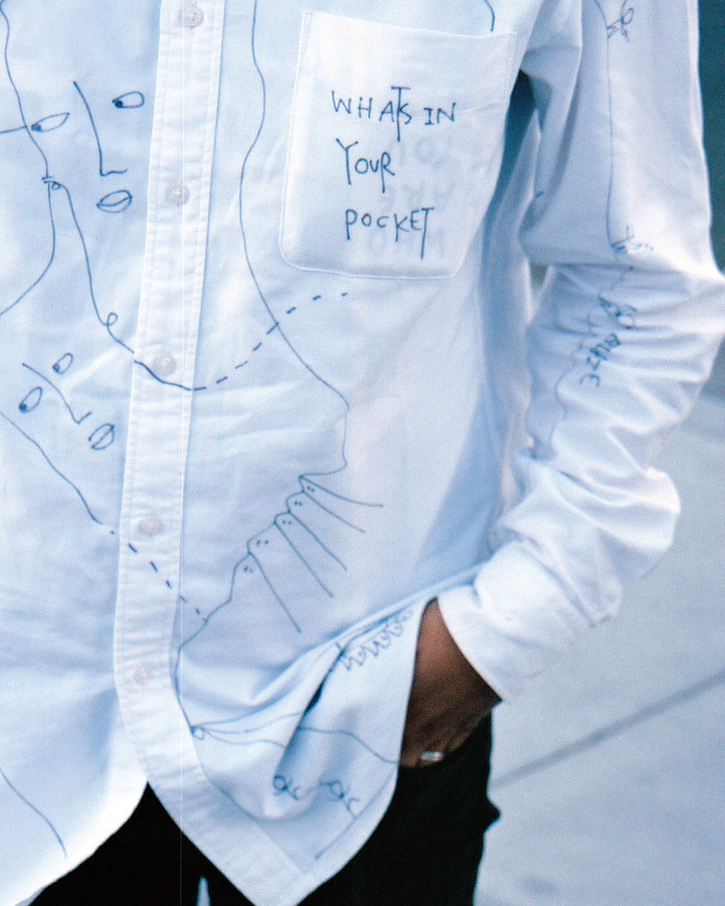

Shantell Martin was in Oakland a couple weeks ago and ended up serendipitously crossing paths with our photographer friend, Karl Reeves. Karl Reeves is a film shooter currently living in Oakland, California, shooting conceptual portraits and scenes from his life. He says he is very influenced by his surroundings and that most of his photos touch many subjects in life. You can ususally spot him with two cameras around his neck, and we're lucky he was wearing them that day to share a slice of his encounter with Martin with us.
Check out the artist through the lens of a film martyr.

Check out our Q&A on the previous page.
For more from Karl Reeves, check out his instagram, @35martyrz.
photo credits: karl reeves